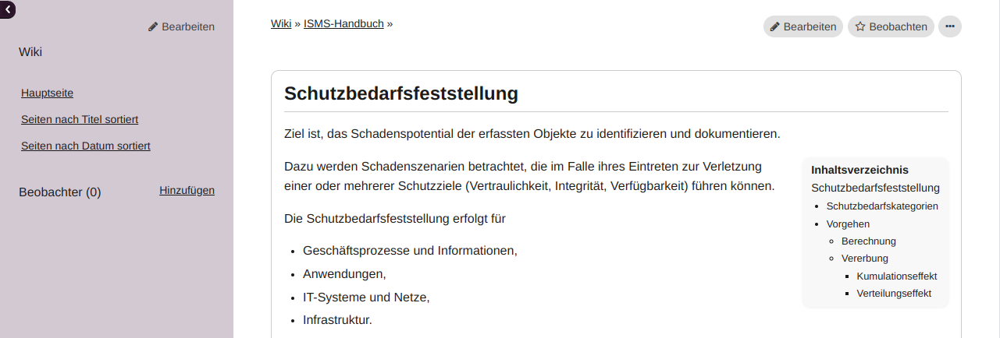
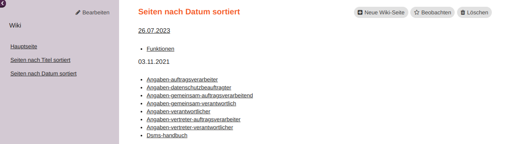
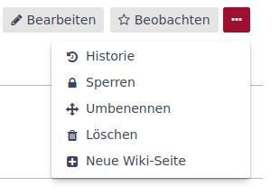
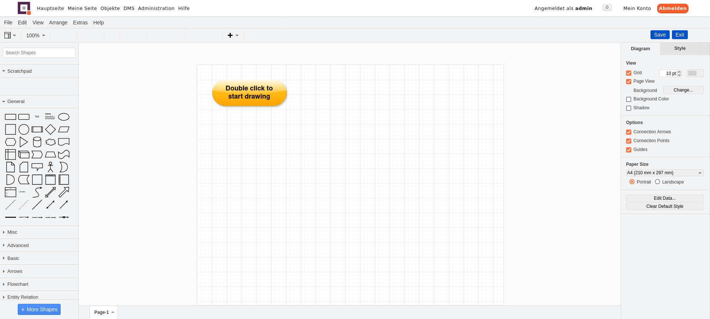

Wiki
Funktionen Wiki
In einem Wiki lassen sich hervorragend Erfahrungen und Wissen gemeinschaftlich sammeln.
In xmera Omnia kann das Wiki in jedem Objekt aktiviert werden. Zu den wichtigsten Funktionen gehören:
-
Textformatierung,
-
Grafiken und Bilder hochladen,
-
Grafiken selbst erzeugen,
-
Wiki-Makros ausführen.
Die Wikigestaltung wird durch die Wiki-Toolbar unterstützt. Mit ihr können Texte formatiert und Bilder oder Grafiken eingebunden werden.
Zum Erstellen von Grafiken muss die Drawio-Integration im Administrationsbereich konfiguriert worden sein.
Wiki erstellen
Ist das Modul Wiki für das Objekt aktiviert, so kann das Objekt-Wiki über den Menüpunkt Wiki geöffnet werden.
Die erste Seite
Ist noch keine Wikiseite gespeichert, so wird die erste Seite des neuen Wikis im Bearbeitungsmodus geöffnet.
In xmera Omnia wird als Auszeichnungssprache Markdown empfohlen. Markdown ist eine sehr einfache Auszeichnungssprache, die die Textformatierung unterstützt.
Über die Administration kann die Anwendung auch auf Textile oder CommonMark Markdown umgestellt werden. CommonMark Markdown und Markdown sind sehr ähnlich. CommonMark Markdown unterstützt zusätzlich Checkboxen und einige CSS Attribute. Mehr dazu erfährst Du in der Hilfe durch Klick auf .

Für die Textformatierung steht eine Toolbar zur Verfügung. Das Ergebnis kannst Du Dir über die Vorschau anschauen. Jede Anpassung kann kommentiert werden. Damit hast Du in der Veränderungshistorie des Wiki die Möglichkeit, Änderungen leichter nachzuvollziehen.
Mit Klick auf den Button wird die aktuelle Seite gespeichert. Es erscheint die Wiki-Startseite.
Die erste erstellte Seite erhält immer den Namen Wiki und ist die Hauptseite (als erstes angezeigte Seite). Der Name, die Festlegung der Hauptseite sowie die Inhalte lassen sich durch Umbenennen und Bearbeiten jederzeit anpassen.
Neue Seite
Eine weitere Wikiseite wird über das 3-Punkte-Menü und die Auswahl aufgerufen. Im Dialog Neue Wiki-Seite müssen der Titel und die Übergeordnete Seite festgelegt werden.
Anschließend öffnet sich das Bearbeitungsfenster mit der Wiki-Toolbar.
Die Umbenennung der Seite, die Änderung der übergeordneten Seite oder die Zuordnung zu einem anderen Objekt erfolgt über den Prozess Seite umbenenen
Sidebar nutzen und bearbeiten
Die Sidebar dient der leichteren Navigation im Wiki. Sie enthält im Standard folgende Elemente:
-
Hauptseite
-
Seiten nach Titel sortiert
-
Seiten nach Datum (der Erstellung) sortiert

Mit der Auswahl Seiten nach Titel sortiert oder Seiten nach Datum sortiert werden die erstellten Wikiseiten aufgelistet. Im folgenden Beispiel ist die Sortierung nach Datum zu sehen:

Die Sidebar kann individuell ergänzt werden. Über den Button  im oberen Bereich der Sidebar gelangst Du in die Bearbeitungsseite der Sidebar.
im oberen Bereich der Sidebar gelangst Du in die Bearbeitungsseite der Sidebar.
Die Wikiseite mit dem Namen Sidebar wird, sobald diese vorhanden ist, oberhalb der Standardelemente dargestellt. So lässt sich mit Hilfe von Seitenlinks ein Inhaltsverzeichnis aufbauen.
Soll der Aufbau eines Inhaltsverzeichnisses automatisiert erfolgen, bietet sich das Wiki-Makro {{child_pages}} an. Dieses listet alle untergeordenten Seiten automatisch auf. Wird die Seite Sidebar der restlichen Seitenstruktur, wie im folgenden Bild zu sehen, übergeordnet
so lässt sich mit dem folgenden Eintrag
in der Seite Sidebar automatisiert die Seitenstruktur anzeigen.

Soll das Inhaltsverzeichnis auf die ersten n Ebenen begrenzt werden, so kann dieses über den Zusatz {{child_pages(depth=_n_)}} eingeschränkt werden.
Soll diese Untergliederung zur Sidebar nicht erfolgen oder ist die alphabetische Reihenfolge ungünstig, kann die Seite manuell strukturiert werden.
Im Folgenden ist ein Beispiel einer manuell angelegten Seitenstruktur zu sehen.
# Netzwerk Wiki
## [[Wiki | Inhalt]]
{{child_pages(wiki)}}
Die Sidebar sieht dann in dem Beispiel wie folgt aus:
Seite umbenennen
Über das 3-Punkte-Menü auf der Seite kommst Du zur Umbenennungsmaske der Wikiseite.
Über diese Maske kann
-
der Seitenname (in der URL) geändert werden,
-
die Seite als Hauptseite (als erste angezeigte Seite) festgelegt werden,
-
bei Namensänderung festlegt werden, dass existierende Links umgeleitet werden,
-
das zugeordnete Objekt geändert werden und
-
eine übergeordnete Seite festgelegt bzw. verändert werden.
| Mit der Namensänderung wird automatisch der URL-Name geändert. Damit funktionieren ggf. externe Links auf die Wikiseite nicht mehr. Wichtig ist dann, die Option Existierende Links umleiten auszuwählen. |
Wikiseite bearbeiten
Über Klick auf den Button gelangt man in den Bearbeitungsmodus für die aktuelle Wikiseite.
Die Bearbeitungsseite baut sich wie folgt (von oben nach unten) auf:
-
Name der Wikiseite (orange)
-
Wiki-Toolbar mit dem Bearbeitungsbereich
-
Zuordung Übergeordente Seite
-
Kommentar
-
Dateieanhänge
Diese Elemente werden im folgenden beschrieben.
Name der Wikiseite
Der Name der Wikiseite lässt sich nicht im Bearbeitungsmodus ändern. Die Änderung ist über Seite umbenennen möglich.
Wiki-Toolbar
Die Textbearbeitung erfolgt in diesem Beispiel mit der Auszeichnungssprache Markdown. Grundsätzlich kann in der Administration auch Textile oder CommonMark Markdown gewählt werden.
In allen Fällen bietet xmera Omnia eine Vorschau und die wichtigsten Formatierungselemente als Toolbar. Somit ist ein schneller Einstieg in die Bearbeitung möglich.
Die Umschaltung zwischen dem Bearbeitungsmodus und der Vorschau erfolgt über den Tab .
Die Bearbeitung erfolgt über die folgenden Button:
-
Schrift in fett
-
Schrift in kursiv
-
Text unterstrichen
-
Text durchgestrichen
-
Darstellung des Texts als Quelltext ohne Formatierung
-
Überschriften der Ebene 1 bis 3
-
Aufzählung
-
Nummerierte Auflistung
-
Aufgabenliste (nur CommonMark Editor)
-
Darstellung eines Zitatbereichs
-
Rücknahme eines Zitatbereichs
-
Erstellen eines Tabellenrahmens
-
Darstellung eines Textes in einem gesonderten Feld
-
Abbildung von Code-Elementen mit farblicher Hervorhebung der Syntax
-
Link zu einer anderen Wiki-Seite
-
 Einbindung einer Grafik.
Einbindung einer Grafik. -
Einbindung eines Drawio Diagramms
-
Einbindung eines Drawio Diagramms aus dem Dokumentenmanagementsystem
-
Dokumente aus dem Dokumentenmanagementsystem einbinden
-
Öffnen einer Hilfe für die verwendete Auszeichnungssprache (hier Markdown)
Diese Funktionen lassen sich gut über die Vorschau ausprobieren. Das erleichtert die Einarbeitung in die Auszeichnungssprache. Am Ende der Tollbar können weitere Hilfen aufgerufen werden. So erhält der Nutzer weitere Tipps zur Formatierung der Texte und zum Einbinden von Informationen aus dem restlichen System. Einige wichtige Elemente sind für Markdown im Kapitel Syntax Markdown beschrieben.
Zuordnung Übergeordnete Seite
In dem Dropdown-Auswahlfeld kann eine bereits in dem Objekt erstellten Wikiseite als übergeordnete Seite ausgewählt werden. So wird eine Struktur dargestellt, die die Orientierung in den Menüs erleichtert.
Kommentar
Das Wiki erstellt automatisch eine Historie der Änderungen. Um Änderungen besser nachvollziehbar zu machen, kann die Änderung mit einem Kommentar ergänzt werden.
Dateianhänge
Hier können Dokumente an die Wikiseite angehängt werden, die dann auf der selben Seite zum Download bereitstehen oder in den Text eingearbeitet werden können.
| Die maximale Dateigröße wird durch die Administration begrenzt. Im Standard sind dieses 5 MB. |
Die so hinzugefügte Datei steht im unteren Bereich zur Ansicht bzw. zum Download bereit.

Ein Dateianhang kann aber auch ohne den Weg über Seite bearbeiten über den Button an die Seite gehängt werden.
| An das Wiki angehängte Bilder lassen sich über das Wiki-Makro  leicht in die Wikiseite einbinden. Bilder, die in der Zwischenablage gespeichert wurden, wie bspw. Screenshots, können direkt per Strg+V in das Textfeld kopiert werden. |
Seite beobachten
Um bei Änderungen auf der Wikiseite informiert zu werden, kann der Button  zugeschaltet werden. Er wechselt dann auf die Darstellung
zugeschaltet werden. Er wechselt dann auf die Darstellung  . Durch einen weiteren Klick auf den Button wird der Beobachtungsmodus wieder ausgeschaltet.
. Durch einen weiteren Klick auf den Button wird der Beobachtungsmodus wieder ausgeschaltet.
| Der Modus wirkt sich immer nur auf die eine Wikiseite aus. |
Änderungshistorie
Alle Änderungen auf der Wikiseite werden in der Historie dokumentiert. Erreicht wird die Historie über das 3-Punkte-Menü und die Auswahl Historie.

Es wird eine Liste der Wiki-Änderungen angezeigt.
In der Liste werden das Datum der Änderung, der Autor und der Kommentar gelistet. Über die Auswahlpunkte zu Beginn jeder Zeile können zwei Änderungsschritte ausgewählt werden, die über den Button verglichen werden können.
Rot hinterlegt sind gelöschte Passagen und grün hinterlegt sind hinzugefügte Passagen.
Durch Klicken auf Annotieren in der Zeile der Veränderung wird die Wikiseite mit den einzelnen Änderungsschritten dargestellt.
Jeder Änderungsschritt ist mit seiner Nummer und dem Autor mit einer eigenen Farbe dargestellt. Klickt man auf die Nummer des Änderungsschritts, wird die Wikiseite mit dem Bearbeitungsstand des gewählten Bearbeitungsschritts angezeigt. Über das dann erscheinende 3-Punkte-Menü kann auf diese Version zurückgesetzt werden.
Wird Auf diese Version zurücksetzen gewählt, wird die Bearbeitung der Wikiseite mit dem ausgewählten Bearbeitungsstand geöffnet. Mit dem (ggf. Kommentieren) Speichern ist der Stand wiederhergestellt.
Wiki-Makros einsetzen
Wiki-Makros sind vordefinierte Funktionen, die dynamische Inhalte in den Wikitext integrieren können. Eine aktuelle Übersicht über alle verfügbaren Makros erhält der Nutzer mit diesem Befehl:
{{macro_list}}
Probiere es einfach mal aus!
Grafiken erstellen
Grafiken spielen im Rahmen des ISMS eine wichtige Rolle. Typische Grafiken sind der Netzplan, Prozesslandkarten oder Prozessablaufdiagramme. Hierfür eignet sich die Integration von Drawio besonders gut.
Weitere Videos.
Um Drawio in xmera Omnia nutzen zu können, muss dass System im Anwendungsbereich entsprechend konfiguriert sein.
Bevor mit dem Zeichnen begonnen werden kann, wird eine Standarddatei mit Hilfe der Wiki-Toolbar erstellt. Hierzu muss gelickt werden. Es erscheint folgendes Eingabefenster:
Nach Eingabe eines Dateinamen und ggf. Auswahl weiterer Parameter, muss auf Makro einfügen geklickt werden. Das Makro {{drawio_attach(dateiname.png)}} wird angezeigt. Nach dem Speichern erscheint ein Startbutton:
Nach dem Doppelklick auf den Startbutton kann mit der Zeichnung begonnen werden.

Syntax Markdown
Markdown ist eine Auszeichnungssprache die auch aus dem git-Umdeld bekannt ist. Sie ermöglicht es einen Fließtext durch einfache Ergänzungen in eine formatierte Form zu bringen.
Die wichtigsten Hilfen sind über den Button in der Wiki-Toolbar zu erhalten. Es öffnet sich ein Fenster mit den wichtigsten Formatierungs- und Verlinkungsmöglichkeiten. Am Ende ist ein Link mit mehr Informationen. Dieser Link öffnet wiederum eine neue Seite mit detaillierteren Beschreibungen.
Wenn weitere Hilfe benötigt wird, hilft die Suche im Internet mit dem Suchbegriff Markdown Redmine.
Wiki exportieren
Du kannst sowohl einzelne Seiten als auch das gesamte Wiki exportieren. Dafür stehen Dir verschiedene Formate zur Verfügung:
-
PDF
-
HTML
-
Text
Einzelne Wikiseite exportieren
Um eine Wikiseite zu exportieren, öffne die gewünschte Seite und scrolle bis an das Seitenende. Dort findest Du die Exportbuttons.
| Enthält Deine Wikiseite ein Inhaltsverzeichnis, wird es aktuell nur im HTML Format ausgegeben. |
Alle Wikiseiten exportieren
Wenn Du alle Seiten Deines Wikis exportieren möchtest, dann klicke in der Seitenleiste auf Seiten nach Titel sortiert.
Dir werden Deine Wikiseiten in alphabetischer Reihenfolge der Titel angezeigt. Scrolle wieder bis an das Seitenende und wähle ein Exportformat.
Als PDF-Dokument exportiert, wird Dir Dein Wiki mit einem Inhaltsverzeichnis erstellt: